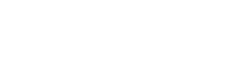

Calendar Defense
Meetings booked, double-bookings caught before they happen, prep time blocked, and reminders out before anyone has to ask for one. Across whatever time zones your week spans.
Available for remote EA roles · US hours
I’m Divina, a C-Suite Executive Assistant. For two years I’ve held the calendar, the inbox, and the follow-ups for a venture capital and private equity group, a personal brand business, and two marketing teams. That included booking my executive onto stages and podcasts.
Opens in a new tab · or read the short version below
Worked With

PhyllisSongWho I Am
I’m a Licensed Agriculturist: a science degree and a professional board license from Caraga State University. Agriculture runs on records. You measure, you log it, you verify it, and you never trust a number you didn’t check twice. Nobody there forgives a sloppy logbook, because the mistake doesn’t surface until the season is already lost.
That habit came with me when I went remote in 2023. Since then I’ve sat behind four executives: a venture capital and private equity group, a personal brand business, and two marketing teams. I hold the calendar, the inbox, the CRM, and every follow-up that would otherwise go quiet.
My job is to notice the double-booking, the unanswered thread, and the tracker that stopped matching reality. Before you do.
My Toolkit
Not a logo wall. These are the tools I open every day to run schedules, campaigns, and reporting.
What I Do
Most executives start me on the calendar and the inbox. Reporting and CRM follow once the rhythm is set and they stop checking my work.
Meetings booked, double-bookings caught before they happen, prep time blocked, and reminders out before anyone has to ask for one. Across whatever time zones your week spans.
I read the thread first. Urgent items surface, routine replies get drafted in your voice, and every follow-up stays tracked until someone actually answers.
Trello and Go High Level boards that match reality: owners named, deadlines visible, status chased between meetings so nothing sits waiting on your next check-in.
Ad performance reports and operational trackers kept accurate, so you can open the sheet mid-meeting and quote the number without checking it first.
I ran GHL campaigns at a web agency before I ran them for executives. Contacts, stages, notes, and automations stay clean, so your pipeline data is worth quoting instead of quietly rotting.
At the equity group I matched my executive to podcasts and booked speaking engagements. Add content scheduling, Canva assets, and social replies for when the founder is the brand.
Selected Work
The pieces of each role that were mine to run end to end, rather than assist on.
Put a venture capital and private equity executive in front of audiences, and kept the calendar around it from collapsing.
Kept the numbers behind a personal brand business accurate enough to make decisions on.
Ran the day-to-day of marketing campaigns inside Go High Level for a web agency’s client accounts.
Grew a client pipeline through direct LinkedIn prospecting and structured follow-up.
Client Words
As I continue building my business, one of the best investments I’ve made has been hiring you as my office assistant. You’re attentive, communicative, and bring such a positive spirit to everything you do.
I truly value working with you and will absolutely continue to do so. I’ve also already referred you to others because of how amazing you are!
Experience
A venture capital and private equity group, a personal brand business, and two marketing teams. All remote, all on their hours.
Personal Brand Accelerator (PBA)
Bison Equity Group
SmartWeb
Nowsite
Education & Credentials
Caraga State University
Professional license · Republic of the Philippines
Operations Support Specialist · CRM & Project Coordinator
Contact
Bring the part of it that keeps slipping: the inbox nobody clears, the calendar that double-books, the report that stopped matching reality. I’ll tell you how I’d take it over in week one.
Discovery Call
Thirty minutes, no pitch. Just what you need covered and how I’d take it on.